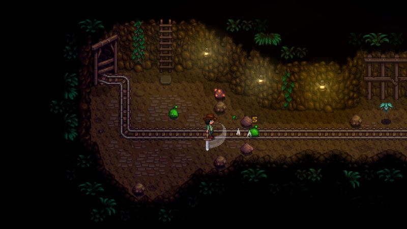
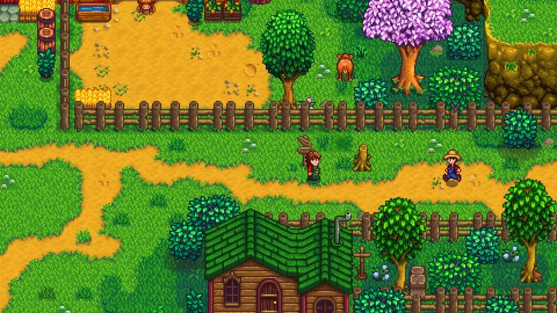

The thirty-second version
Turnips heal what capitalism broke.
Marnie's animals cost more than my kid's actual college fund.
Stardew Valley is one man's love letter to Harvest Moon and it landed with the force of a full pumpkin harvest. It's calm, it's warm, it's endless. You will lose two hours making sprinkler layouts and not notice. We keep new save files running just in case one of us needs to escape reality for an evening. It works every single time.
Okay, what is this thing?
It's your first spring. You have twelve parsnip seeds, a beat-up tin watering can, and Grandpa's ghost is somehow judging you already. The mayor won't shut up about a chicken. Somewhere in town there's a purple-haired girl who has decided you're her problem now. This is the tone. If it sounds annoying, it isn't. If it sounds soothing, it very much is.
Under the calm sits a genuinely deep game. Crop planning has real optimisation, the mines have combat and randomised layouts, fishing has a mini-game half of us love and half of us despise. Marriage, kids, festivals, and the community centre give you long-form goals that don't nag at you. Play twenty minutes a night for a year and you'll still have things to find. It's the definition of a game that respects your time.


Why it escaped the group chat
- Made almost entirely by one person, ConcernedApe, over roughly four years.
- Runs on almost anything and supports co-op for up to four players.
- There is no hard end; you can keep farming as long as the seasons keep turning.
Three dads enter
01
Dad Who Skipped the Tutorial
I named a chicken. I wept when it died. It didn't die.
I named the first hen Beatrice, panicked when she stopped laying, and spent forty minutes reading the wiki convinced she was ill. She was fine. She'd just been eating in a corner. I haven't opened the crafting menu in six months, but I can tell you every chicken's mood on a scale of one to ten.
02
The Descent Guy
Ancient fruit into kegs. It's an economy. I run it.
I found the ancient fruit and iridium sprinkler pipeline in my first Fall, set my greenhouse up for maximum keg throughput, and spent Winter maximising my profits from a single crop. I talk about starfruit in a way that would make a Wall Street trader nervous. I also did the math on Prismatic Shards, which I'm told is insufferable. I was right.
03
Normal-ish Dad
The genuine best wind-down game any of us owns.
Twenty minutes before bed and the entire day's stress melts off. I play a farm in the corner of my life the way some people knit. It doesn't ask me to be good at anything, it just gently gives me something to tend. I've got three farms across three platforms and I would like an Xbox save transfer, thank you.
Who it is for and what to watch
Invite these people
- Anyone whose brain runs hot after work
- People who owned a Game Boy Advance and remember Harvest Moon fondly
- Dads on the verge of buying real chickens
Dad caveats
- Year one is stingier than the loop eventually becomes
- Fishing is a subject of religious debate at our house
- You may accidentally become a Junimo economics scholar
Receipts
Two of us have multi-year saves on PC; the third has three separate 'just one more day' farms he refuses to abandon.